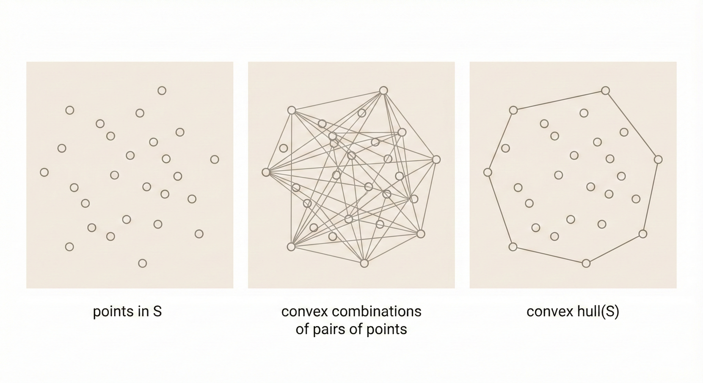

EE 364A (Convex Optimization): Lecture 2 - Convex Sets
Convex Sets
Affine Combination
\[x = \theta x_1 + (1-\theta)x_2, \quad \theta \in \mathbb{R}\]
Affine combination is the special form of linear combination where the sum of coefficients equals 1.
Example: Solution set \(\{x \mid Ax = b\}\)
For any \(x_1, x_2\) which both are solutions of \(Ax=b\):
\[A(\theta x_1 + (1-\theta)x_2) = \theta A x_1 + (1-\theta) A x_2 = \theta b + (1-\theta)b = b\]
 Figure: Affine combinations form a line through two points. Unlike linear combinations, affine combinations require coefficients to sum to 1, making them translation-invariant—the solution set of Ax=b forms an affine subspace.
Figure: Affine combinations form a line through two points. Unlike linear combinations, affine combinations require coefficients to sum to 1, making them translation-invariant—the solution set of Ax=b forms an affine subspace.
Convex Set
Linear segment: \(x = \theta x_1 + (1-\theta)x_2, \quad 0 \leq \theta \leq 1\)
Convex set: A set \(C\) is convex if for all \(x_1, x_2 \in C\) and \(0 \leq \theta \leq 1\):
\[\theta x_1 + (1-\theta)x_2 \in C\]
 Figure: A convex set contains all line segments between any two points in the set. The left shape is convex (any line segment between two points stays inside), while the right shape is non-convex (some line segments exit the set).
Figure: A convex set contains all line segments between any two points in the set. The left shape is convex (any line segment between two points stays inside), while the right shape is non-convex (some line segments exit the set).
Convex Combination and Convex Hull
Convex combination:
\[x = \theta_1 x_1 + \theta_2 x_2 + \ldots + \theta_k x_k\]
where \(\theta_1 + \theta_2 + \ldots + \theta_k = 1\) and \(\theta_i \geq 0\)
Convex hull: The set of all convex combinations of points in \(S\)—the smallest convex set containing \(S\).
 Figure: The convex hull of a finite set of points forms a convex polygon (or polyhedron in higher dimensions) that encloses all the points. It’s like stretching a rubber band around the outermost points.
Convex Cone
\[x = \theta_1 x_1 + \theta_2 x_2, \quad \theta_1 \geq 0, \theta_2 \geq 0\]
 Figure: A convex cone is closed under positive linear combinations. If you take any two vectors in the cone and scale them by non-negative coefficients, their sum remains in the cone. The cone extends infinitely from the origin.
Figure: A convex cone is closed under positive linear combinations. If you take any two vectors in the cone and scale them by non-negative coefficients, their sum remains in the cone. The cone extends infinitely from the origin.
Hyperplanes and Halfspaces
Hyperplane
Set of the form \(a^\top x = b\) where \(a \neq 0\)
- \(a\) is the normal vector
- Hyperplanes are both affine and convex
Halfspaces
\[a^\top x \leq b\]
- Halfspaces are convex
 Figure: A hyperplane (a^x = b) divides space into two halfspaces: a^x ≤ b and a^x ≥ b. The normal vector a points perpendicular to the hyperplane, and b controls the offset from the origin.
Figure: A hyperplane (a^x = b) divides space into two halfspaces: a^x ≤ b and a^x ≥ b. The normal vector a points perpendicular to the hyperplane, and b controls the offset from the origin.
Euclidean Balls and Ellipsoids
Euclidean Ball
\[B(x_c, r) = \{x \mid \|x - x_c\|_2 \leq r\} = \{x_c + ru \mid \|u\|_2 \leq 1\}\]
Ellipsoid
\[\{x \mid (x - x_c)^\top P^{-1}(x - x_c) \leq 1\}\]
where \(P \in \mathbb{S}_{++}^n\) (P is positive definite symmetric)
Alternative representation: \(x_c + Au\) where \(A\) is an invertible square matrix
 Figure: Euclidean balls have uniform radius in all directions, while ellipsoids stretch the ball along different axes. The matrix P in the ellipsoid formula determines the shape and orientation of the stretching.
Figure: Euclidean balls have uniform radius in all directions, while ellipsoids stretch the ball along different axes. The matrix P in the ellipsoid formula determines the shape and orientation of the stretching.
Norm Balls and Norm Cones
Norm Ball
A norm function \(\|\cdot\|\) satisfies:
- \(\|x\| \geq 0\), and \(\|x\| = 0\) only if \(x = 0\)
- \(\|tx\| = |t| \cdot \|x\|\) for \(t \in \mathbb{R}\)
- \(\|x + y\| \leq \|x\| + \|y\|\) (triangle inequality)
Norm ball: \(\{x \mid \|x - x_c\| \leq r\}\)
 Figure: Different norms create different ball shapes. L1 norm creates a diamond, L2 norm creates a circle, and L∞ norm creates a square. All satisfy the norm axioms but measure distance differently.
Figure: Different norms create different ball shapes. L1 norm creates a diamond, L2 norm creates a circle, and L∞ norm creates a square. All satisfy the norm axioms but measure distance differently.
Norm Cone
\[\{(x, t) \mid \|x\| \leq t\}\]
The Euclidean norm cone is called the second-order cone.
 Figure: A norm cone extends infinitely upward, containing all points (x,t) where the norm of x is bounded by t. The second-order cone (using L2 norm) is fundamental in conic optimization and has special properties for efficient optimization.
Figure: A norm cone extends infinitely upward, containing all points (x,t) where the norm of x is bounded by t. The second-order cone (using L2 norm) is fundamental in conic optimization and has special properties for efficient optimization.
Polyhedra
Defined by inequality and equality constraints:
\[Ax \preceq b, \quad Cx = d\]
where \(A \in \mathbb{R}^{m \times n}\) and \(C \in \mathbb{R}^{p \times n}\)
Here \(Ax \preceq b\) denotes componentwise inequality, i.e., \((Ax)_i \leq b_i\) for all \(i\).
 Figure: A polyhedron is the intersection of finitely many halfspaces and hyperplanes. Linear programming optimizes over polyhedra, making them fundamental to optimization theory. Every vertex represents a basic feasible solution.
Figure: A polyhedron is the intersection of finitely many halfspaces and hyperplanes. Linear programming optimizes over polyhedra, making them fundamental to optimization theory. Every vertex represents a basic feasible solution.
Positive Semidefinite Cone
Let \(\mathbb{S}^n\) denote the set of \(n \times n\) symmetric matrices.
- \(\mathbb{S}_+^n = \{X \in \mathbb{S}^n \mid X \succeq 0\}\) — positive semidefinite
- \(\mathbb{S}_+^n\) is a convex cone
- \(\mathbb{S}_{++}^n = \{X \in \mathbb{S}^n \mid X \succ 0\}\) — positive definite
 Figure: The positive semidefinite cone contains all symmetric matrices with non-negative eigenvalues. It’s a convex cone in the space of symmetric matrices, fundamental to semidefinite programming (SDP).
Figure: The positive semidefinite cone contains all symmetric matrices with non-negative eigenvalues. It’s a convex cone in the space of symmetric matrices, fundamental to semidefinite programming (SDP).
Preserving Convexity
Testing Convexity
To determine if a set \(C\) is convex, check whether every convex combination of any two points in \(C\) is also in \(C\):
\[x_1, x_2 \in C, \quad 0 \leq \theta \leq 1 \implies \theta x_1 + (1-\theta)x_2 \in C\]
Operations That Preserve Convexity
1. Intersection: The intersection of convex sets is convex.
 Figure: Intersecting convex sets always produces a convex set. This property is crucial because it allows us to build complex convex sets by intersecting simpler ones, like defining polyhedra as intersections of halfspaces.
Figure: Intersecting convex sets always produces a convex set. This property is crucial because it allows us to build complex convex sets by intersecting simpler ones, like defining polyhedra as intersections of halfspaces.
2. Affine functions: \(f(x) = Ax + b\)
If \(C\) is convex, then both \(f(C)\) and \(f^{-1}(C)\) are convex.
Figure: Affine transformations (scaling, rotation, translation) preserve convexity. If you take a convex set and apply an affine function, the image is still convex. Similarly, the pre-image of a convex set under an affine function is convex.
3. Perspective functions: \(P: \mathbb{R}^{n+1} \to \mathbb{R}^n\)
\[P(x, t) = x/t, \quad \text{dom}\,P = \{(x, t) \mid t > 0\}\]
4. Linear-fractional functions:
\[f(x) = \frac{Ax + b}{c^\top x + d}, \quad \text{dom}\,f = \{x \mid c^\top x + d > 0\}\]
Example: \(f(x) = \frac{1}{x_1 + x_2 + 1}x\)
Generalized Inequalities
A convex cone \(K \subseteq \mathbb{R}^n\) is a proper cone if:
- \(K\) is closed (contains its boundary)
- \(K\) is solid (has nonempty interior)
- \(K\) is pointed (contains no line)
Examples of Proper Cones
Nonnegative orthant: \(K = \mathbb{R}_+^n = \{x \in \mathbb{R}^n \mid x_i \geq 0, \, i=1,\ldots,n\}\)
Positive semidefinite cone: \(\mathbb{S}_+^n\)
Nonnegative polynomials on [0,1]: \[K = \{x \in \mathbb{R}^n \mid x_1 + x_2t + x_3t^2 + \ldots + x_nt^{n-1} \geq 0 \text{ for } t \in [0,1]\}\]
Generalized Inequality Notation
\[x \preceq_K y \Longleftrightarrow y - x \in K\] \[x \prec_K y \Longleftrightarrow y - x \in \text{int}\,K\]
Examples
Componentwise inequality (\(K = \mathbb{R}_+^n\)): \[x \preceq_{\mathbb{R}_+^n} y \Longleftrightarrow x_i \leq y_i \text{ for } i=1,2,\ldots,n\]
Matrix inequality (\(K = \mathbb{S}_+^n\)): \[X \preceq_{\mathbb{S}_+^n} Y \Longleftrightarrow Y - X \text{ is positive semidefinite}\]
Properties Similar to \(\leq\) in \(\mathbb{R}\)
\[x \preceq_K y, \, u \preceq_K v \implies x + u \preceq_K y + v\]
Minimum and Minimal Elements
Important: \(\preceq_K\) is not a total ordering—we can have \(x \not\preceq_K y\) and \(y \not\preceq_K x\) simultaneously.
Minimum: \(x\) is the minimum element of \(S\) with respect to \(\preceq_K\) if: \[y \in S \implies x \preceq_K y\]
Minimal: \(x\) is a minimal element of \(S\) with respect to \(\preceq_K\) if: \[y \in S, \, y \preceq_K x \implies y = x\]
 Figure: The minimum element is unique and comparable to all other elements (if it exists). Minimal elements are not dominated by any other element in the set, but there can be multiple minimal elements that are incomparable to each other.
Figure: The minimum element is unique and comparable to all other elements (if it exists). Minimal elements are not dominated by any other element in the set, but there can be multiple minimal elements that are incomparable to each other.
Key Insight
Mathematical foundations of convex optimization rest on convex sets and generalized inequalities. Convex sets (balls, cones, polyhedra, semidefinite cones) form the geometric foundation. Affine functions, intersections, and perspective operations preserve convexity, allowing us to construct complex convex sets from simpler building blocks. Generalized inequalities (\(\preceq_K\)) extend scalar ordering to vectors and matrices, enabling matrix inequalities (semidefinite constraints) and componentwise constraints. While generalized orderings lack total comparability, they retain key properties like additivity, making them powerful tools for formulating optimization problems over cones. These mathematical structures—convex sets, proper cones, and their preservation under operations—form the bedrock of convex optimization theory.